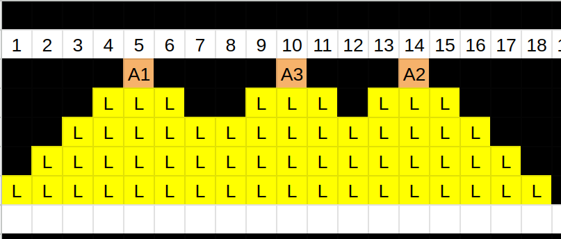

縦 \(H\) 横 \(10^{100}\) のグリッドがあります。グリッドの上から \(i\) 行目、左から \(j\) 列目のマスを \((i, j)\) と呼びます。
グリッドは最初全て暗闇で覆われています。
Aoki君はこれから \((1,A_1),(1,A_2)\dots(1,A_N)\) の \(N\) 箇所にライトを置いていきます。
\((1, A_i)\) に置かれたライトの発する光はそこから \((H, A_i)\) に向かって直線に、\(1\) マス進むごとに左右に幅を \(1\) マス増やしながら進みます。
厳密には、 \((1, A_i)\) に置かれたライトの照らす範囲は \((1, A_i)\), \((2, A_{i-1} \dots A_{i+1})\), \(\dots\), \((H, A_{i - H + 1} \dots A_{i + H - 1})\)です。

入力は以下の形式で標準入力から与えられます。
\(H\) \(N\)
\(A_1\) \(A_2\) \(\ldots\) \(A_N\)
ライトで照らされるマスの総数を出力してください。
5 3 5 14 10
6
1000000 1 1000000
1000000000000